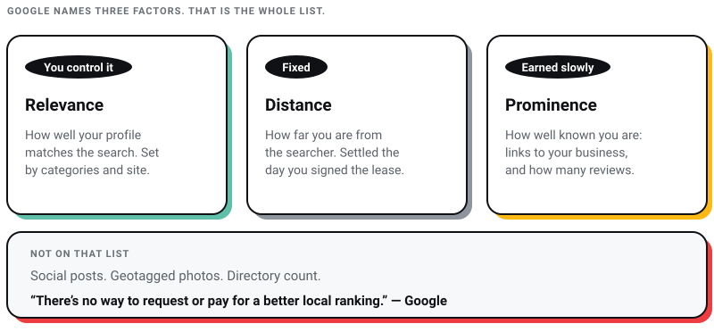
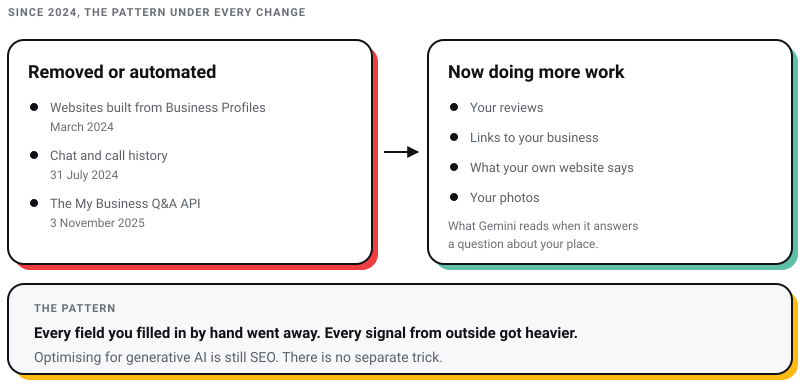

Digital Marketing
Digital Marketing
AEO vs GEO vs SEO: What Actually Matters in 2026 (And What Is Just Noise)
Learn about AEO vs GEO vs SEO. Discover what changed with AI search, what still matters, and how to optimize for Google AI Overviews, ChatGPT, and…

I run a web design studio in Salt Lake, Kolkata. Every few weeks someone sends me a local SEO audit that runs to forty items, and every few weeks the same three things are actually wrong: the primary category on the Google Business Profile is too vague, the business is nowhere near where its customers are searching, and the last review on the profile is two years old.
That is the honest shape of the Google map pack. Google publishes what it weighs, and one of the three things it names is your distance from the searcher, which you settled the day you signed your lease. The tier list below is what is left after you accept that.
This guide was first written for 2024 and I have rebuilt it for 2026. Several numbers that were in the original are gone. I could not trace any of them to a source that still exists, and a statistic nobody can check is worse than no statistic. I say where, and why, in each section.

If you read one section, read this one.
Google's own help page on local ranking is short, and worth reading before any agency deck. It names three factors.
Relevance is how well your profile matches what someone searched for. This is the part you control with categories, services, and a website that says what you actually do.
Distance is how far your business is from the person searching. If they did not name a location, Google uses what it knows about where they are. This is why your rankings look excellent from your own desk and disappear four kilometres away, and why checking your map pack position from your office chair tells you almost nothing.
Prominence is how well known the business is. Google explains it in terms of how many websites link to you and how many reviews you have. That is the factor a new business has to earn, and it is the slowest of the three.
The same page says something worth quoting to anyone who cold-calls you with a guaranteed map pack package: "There's no way to request or pay for a better local ranking on Google." Google also states that businesses with complete and accurate information are more likely to show up in local results, which is the least glamorous and most reliable advice on this entire page.
Notice what is not on Google's list. Social posts are not there. Geotagged photos are not there. Directory count is not there. Those things can matter indirectly, and I will get to them, but they are not what Google says it measures.

Local SEO advice rots faster than any other kind, because Google keeps removing the fields the advice was written about. Here is what has actually been switched off or switched on since the start of 2024, with dates.
| Change | When | What it means for you |
|---|---|---|
| Websites built from Business Profiles turned off; visitors redirected to the profile until 10 June 2024 | March 2024 | If your "website" was a business.site address, you have had no website for two years |
| Chat and call history removed from Business Profiles | 31 July 2024 | Enquiries have to land on your own site, phone or WhatsApp, not inside Google |
| Google discontinued the My Business Q&A API, saying it is updating the Q&A functionality and experience | 3 November 2025 | Seeding your own questions is no longer a strategy you can build on |
| Gemini began answering questions about places in Google Maps in India, drawing on reviews, photos, place details and the web | 6 November 2025 | Your reviews and your website are now the raw material for answers about you |
| Ask Maps rolled out in the U.S. and India on Android and iOS | 12 March 2026 | People ask a question instead of scanning three listings |
| AI Mode in Google Search added Bengali, along with Kannada, Malayalam, Marathi, Tamil, Telugu and Urdu | 8 October 2025 | In Kolkata, a real share of local queries is now being asked and answered in Bangla |
Read those rows together and a pattern shows up. Every field Google built for you to fill in by hand has been removed or automated. Every field that comes from the outside world, your reviews, the links to you, what your own site says, has been made more important, because that is what the AI answers are assembled from. Google's own guidance on generative AI search, last updated 10 July 2026, says the same thing in one line: from Search's perspective, optimising for generative AI is optimising for the search experience, and thus still SEO. There is no separate trick.

My position, and it costs me retainer revenue to say it: if your Google Business Profile is complete and your reviews are real and recent, the next best rupee goes into your website, not into more local SEO tooling.
These are the ones I would not launch a local business without. They map to relevance and to the parts of prominence you can influence in the first quarter.
Google's help page on categories states it without hedging: the categories you select affect your local ranking on Google. That is a stronger statement than Google makes about almost anything else on the profile, and it is why this is item one rather than item eight.
Pick the most specific primary category that describes your core business. A gynaecologist picks gynaecologist, not doctor. A studio that mostly builds websites picks website designer, not advertising agency. Google's guidelines tell you to use the fewest categories it takes to describe your core business, and warn that a specific category already implies the general one, so adding both is wasted.
Google's help on editing a profile says you can select up to nine more categories beyond the primary. Use them for departments and services you genuinely run, not for every keyword you would like to rank for. To sanity check your choice, search your main service on Google Maps and look at what the businesses holding the top three have chosen. In the Kolkata market, that exercise usually shows one or two categories doing all the work for a whole sector.
Whitespark's 2026 Local Search Ranking Factors report, published 6 November 2025, put the primary category at the top of its local pack list. That report is an opinion survey, 47 local search practitioners scoring 187 factors, and the authors say plainly that they have no special access to Google's algorithm. I cite it as informed opinion, which is what it is. It happens to agree with Google's own documentation here, which is why I am willing to put category at tier A.
Complete and accurate information is the one thing Google explicitly links to showing up in local results. Most profiles I open in Kolkata are part-filled: hours missing for half the week, no services listed, a phone number that rings a person who left the company.
Google says more reviews and positive ratings can help your local ranking, and that positive reviews plus helpful replies help a profile stand out. Reviews are also the input Gemini now reads when it answers a question about your business in Maps. So this is the highest-value ongoing work on the list, and the one most likely to get a business into trouble.
What Google's policies actually allow:
Google is enforcing harder than most local businesses realise. In an announcement on 7 April 2025 it said it had blocked or removed more than 240 million policy-violating reviews and more than 12 million fake Business Profiles from 2024. If you are buying reviews in bulk from a WhatsApp seller, you are on the wrong side of a machine learning system that gets better every year.
There is an Indian layer to this too. The Bureau of Indian Standards published IS 19000:2022, Online Consumer Reviews: Principles and Requirements for their Collection, Moderation and Publication, in November 2022. It is voluntary, and almost nobody in the Kolkata SME market has heard of it, but it exists, and it sets out expectations around integrity, transparency and moderation of reviews you publish. If you are embedding reviews on your own website, it is worth reading before someone else quotes it at you.
Link your profile to a page that answers the query, then write the title tag for that query. If your profile is for a cafe in Ballygunge, "Best Boutique Cafe in Ballygunge, Kolkata" is a better landing page title than your brand name alone. Sometimes the right target is the homepage because it carries the most authority, and sometimes it is a service page. Choose on relevance, not on habit.
This is cheap, it takes an afternoon, and it is the single most common thing missing on the sites I audit. Our own SEO checklist covers the on-page mechanics in more depth if you want the full pass.
Use the city and, where it is true, the neighbourhood in page titles, headings and body copy. "Yoga Classes in New Town" tells a reader and a search engine more than "Yoga Classes". This is relevance, and it works because it is honest, not because it is a trick.
The failure mode is the footer stuffed with thirty locality names you do not serve. That fools nobody now, and a page that promises Howrah service you cannot deliver earns you a bad review, which costs you prominence. I would rather have one genuinely local page than twelve fake ones.
Internal links are the only links you fully control. A law firm should link "Personal Injury" and "Estate Planning" from the homepage and from each other. A gym's post on beginner workouts should link its personal training page. Search engines use those links to work out which of your pages matters, and readers use them to reach the page that converts. Most of the Kolkata sites I open have a beautiful homepage and a service page nothing points at. Fixing that is free.
Worth real effort once the tier A work is genuinely done, not while your category is still wrong.
Put the query in the H1, and let the H2s carry the related terms. Headings tell a reader what the page is before they commit to reading it, which is most of why they help at all. Choose those terms with real keyword research rather than guessing, and stop at one clear phrase per heading. Keyword-stuffed headings read as desperate and convert worse.
Quantity matters, but recency matters more than most business owners think, because a profile with forty reviews that stop in 2024 tells a prospect the business may have closed. Nobody outside Google knows the number you need, and any agency quoting you a threshold is inventing it. What you can control is the habit: ask every satisfied customer, at the moment they are happiest, through whatever touchpoint you already have.
A restaurant in Gariahat asking at the end of every good meal will out-review a competitor running one campaign a year, and it will look alive while doing it.
Distance is the factor you cannot optimise, only work around. A cake shop in central Kolkata has a structural advantage over one in an outer suburb for a "cake shop in Kolkata" search, and pretending otherwise is how agencies sell hope.
One page per service, each written to be the best answer to one query. A digital agency runs separate pages for SEO, social media and web design. That gives you something specific to link from the profile and something specific to rank, and it is what makes long-tail queries like "affordable website design in Kolkata" reachable at all.
Write these for a buyer, not for a crawler. A service page that names its prices, its area and its limits does more work than one that lists adjectives. Our own breakdown of what web design costs in Kolkata is written that way, because it answers the question every buyer has and most agencies dodge.
Google lets service businesses add services with names, descriptions and prices, and pulls suggestions from your category. Customers see the list in Maps. Fill it in using plain names for what you sell, and keep prices out of the service name itself, since Google rejects those. Where your category also offers Products, use it to show what you actually stock.
You will find advice telling you to fill the Products section even if you sell no products, usually with a specific number of items to add. Ignore both halves of it. The number has no source behind it, and forcing a section to hold things it was not built for is how a listing starts reading as spam.
Photos are the first impression, and after the Gemini update they are also part of what Maps reads when it answers a question about your place.
Seeding your own questions and answers on your profile is standard advice, and it is no longer safe to build on. Google discontinued the My Business Q&A API on 3 November 2025, saying it is in the process of updating the Q&A functionality and user experience, and in Maps the answering has largely moved to Gemini, which assembles replies from reviews, photos, place details and the web.
The work moved rather than disappeared. Put the answers where the systems can read them: a real FAQ on your own site, service descriptions that state hours, parking, payment methods and turnaround, and reviews that describe genuine experiences. When Ask Maps answers "does this place have parking", it is reading your content, not your cleverness.
Optimise for the area you are actually in before chasing the area you wish you were in. Sponsor the local school event, get mentioned by the neighbourhood association, show up in the block's WhatsApp group as the business that fixed something. Those produce mentions and links, which is prominence, which is the one factor you can still build from zero.
Whitespark's practitioner survey ranks keywords in the profile title third for local pack results, and every experienced local SEO will tell you it works. Google's guidelines are equally clear that your name must be the name you actually trade under, and must not carry marketing taglines. Both of those things are true at once, which is why this sits in tier C rather than tier A.
The only clean way to do it is to genuinely change your registered trading name, and then change it everywhere: signage, GST registration, invoices, business cards, the website, every directory. If you are not willing to do all of that, do not put the keyword in your profile name. Google has removed more than twelve million fake profiles in a single year; a name that does not match your storefront is exactly the signal its verification process is built to catch.
My own view is that a business named for a keyword tends to look like a business with nothing else to say. I would rather spend that effort on the reviews.
Citations, meaning your name, address and phone repeated across directories, used to be a core tactic. I now treat them as hygiene: get the important ones right, keep them consistent, stop. Chasing a hundred low-grade listings is busywork that feels like progress. The reason to keep them accurate is not a ranking bump. It is that a wrong phone number on a directory you forgot about will cost you a customer this month.
Google describes prominence partly in terms of how many websites link to your business, so links still count for the map pack, not only for organic. Local ones are what matter here: the Kolkata publication that covered your opening, the industry body you belong to, the supplier who lists their stockists.
Quality beats volume by a distance, and buying links remains a bad trade. If you want the approach I actually recommend, it is in our backlinks strategy guide.
Facebook, Instagram and Threads activity is not on Google's list of local ranking factors. Posting more will not move your map pack position directly.
Run social media because it builds a brand people search for by name, and because it produces mentions that can turn into links and reviews. Run it as an SEO tactic and you will spend a year measuring the wrong thing.
Adding GPS coordinates to your image files before uploading them is a tactic sold in a lot of local SEO packages here. Google does not document photo geotags anywhere as a local ranking signal, and the three factors it does name are relevance, distance and prominence. I have never seen it produce a change, and I would not pay anyone for it.
Google's line on this is one sentence long: there is no way to request or pay for a better local ranking. Anyone guaranteeing you position one in the map pack is either selling ads and calling them rankings, or planning to manipulate reviews and citations with your business as the thing that gets suspended. If you are comparing vendors, our list of SEO companies in Kolkata is written to help you tell the difference.
The tier for each factor, and what the tier is based on. Where Google states something directly, I have said so. Where it is my judgement or a practitioner survey, I have said that too.
| Factor | Tier | Basis |
|---|---|---|
| Primary and additional categories | Must do | Google states categories affect local ranking |
| Complete, verified profile | Must do | Google states complete and accurate info helps |
| Reviews: volume, recency, replies | Must do | Google states more reviews and positive ratings can help |
| Keywords in landing page title | Must do | Relevance; my judgement on effort versus return |
| City and locality in website content | Must do | Relevance; my judgement |
| Internal links | Must do | My judgement; free and under your control |
| Keywords in landing page headlines | Should do | Relevance; my judgement |
| Service pages and profile services list | Should do | Google documents services on the profile |
| Photos and video | Should do | My judgement; no ranking claim from Google |
| Answering questions on your own site | Should do | Q&A API discontinued 3 Nov 2025; Gemini reads your content |
| Local community presence | Should do | Builds prominence; my judgement |
| Proximity to the searcher | Fixed | Google names distance as a factor; you cannot change it |
| Keywords in business name | Do if you can | Practitioner survey ranks it high; Google's name rules constrain it |
| Citations and directories | Do if you can | My judgement; hygiene rather than leverage |
| Local backlinks | Do if you can | Google describes prominence partly as links to your business |
| Social signals | Ignore for ranking | Not among Google's named factors |
| Geotagged photos | Ignore | Undocumented by Google; my judgement |
| Paid ranking guarantees | Ignore | Google states you cannot pay for local ranking |
Almost every guide to this opens with a statistic about the share of local searchers who visit a store within a week. Do not build a plan on it. It is quoted everywhere, it is always attributed to Google with no link, and the Think with Google page that hosted that family of figures now redirects to a general hub. If I cannot open the source, it does not go in my post.
Here is the process instead, which does not need a statistic to justify it.
List everything you actually sell, in the words your customers use rather than the words on your GST invoice. Take the time here; a service you forget is a page you never build.
Search each term yourself and look at what Google returns. If a map pack appears, the query has local intent and your profile is in play. If it does not, that term needs a normal content page, not a local strategy. This one manual check saves more wasted effort than any tool.
Local volumes are hard to pin down and often tiny. A term with fifty searches a month in Kolkata can beat one with five thousand nationally, because the fifty can walk into your shop. Use volume to order your work, never to dismiss a term that describes exactly what you sell.
Decide which services deserve their own page and which are sections. One page per intent. If two terms would produce the same page, they are one page.
Write for the person deciding whether to call you. Prices or ranges if you can, area covered, turnaround, what you will not do. Google's 2026 guidance for AI search says the biggest lever is content people find unique, compelling and useful, and its example of what fails is the generic listicle anyone could have written. A Kolkata service page naming its neighbourhoods, its constraints and its prices is not something a model can generate from nothing.
If a local business handed me a profile tomorrow, in this order:
Everything else on this page is tier B and below for a reason. I have watched businesses spend a year on citations and social posting with a wrong primary category sitting untouched at the top of their profile.
Google names three factors: relevance, distance and prominence. Relevance is how well your profile matches the search, distance is how far you are from the searcher, and prominence is how well known you are, which Google describes in terms of links to your business and how many reviews you have.
Because distance is one of the three factors and it is measured from the searcher, not from you. When someone does not specify a location, Google uses what it knows about where they are. Always check your rankings from several points across the city, or you will keep celebrating a result only you can see.
No. Google's own help page says there is no way to request or pay for a better local ranking. You can buy ads that appear near local results, but that is advertising and it should be sold to you as advertising.
Answer anything that is already there, but do not build a strategy on it. Google discontinued the My Business Q&A API on 3 November 2025 and said it is updating the Q&A functionality and experience. In Maps, Gemini now answers questions about places using reviews, photos, place details and the web. The reliable move is to answer those questions on your own website, where you control the wording.
Nobody outside Google knows, and any specific number you are quoted is invented. Google says more reviews and positive ratings can help. What I watch instead is recency and reply rate, because a profile whose newest review is two years old reads as a business that may have closed.
Only if you have genuinely changed your trading name and can prove it on your signage, your invoices and your registrations. Google's guidelines require the name customers know you by and forbid marketing taglines, and its verification process is built to catch a name that does not match the storefront. Practitioners rate keywords in the name highly. I still would not do it for most businesses.
The inputs did not change; the surface did. Google's own generative AI guidance says optimising for AI search is still SEO, and tells you not to chunk your content or write in a special style for machines. What has changed locally is that answers are being assembled from your reviews, your profile and your site, and in Kolkata a growing share of that is happening in Bangla, since AI Mode added Bengali in October 2025.
Local SEO is sold as a long list because a long list is easier to invoice than three things. The three things are your category, your reviews and a website that answers the question. The rest is refinement on top of those.
I lost two companies before Pixel Street, and the habit that survived both is checking whether the work I am about to bill for will actually move the thing the client cares about. On a local business, most of the time, it is one of those three.
At Pixel Street, we build the website that sits under all of this, for local businesses and for brands like Coca-Cola, ITC and Marico. If you want an honest read on which tier your own local search problem sits in, ask us.
17 min read 38 cited sources Digital Marketing
Author
Khurshid Alam is the founder of Pixel Street, an AI-native design & development studio. Design thinking on weekdays and spreadsheets on weekends.
He writes about growth, design, and AI, mostly because someone has to say the quiet parts out loud.
Digital Marketing
Learn about AEO vs GEO vs SEO. Discover what changed with AI search, what still matters, and how to optimize for Google AI Overviews, ChatGPT, and…
 Digital Marketing
Digital Marketing
Discover the 5 reasons ChatGPT recommends your competitors instead of your business—and how to improve AI visibility, SEO, GEO, and AEO.
 Digital Marketing
Digital Marketing
Want ChatGPT to recommend your brand? Learn how AI chooses businesses, where citations come from, and practical ways to increase your visibility.
 Digital Marketing
Digital Marketing
Imagine stumbling upon a secret formula that not only boosts your content’s visibility but also ensures it towers over the competition. That’s exactly…